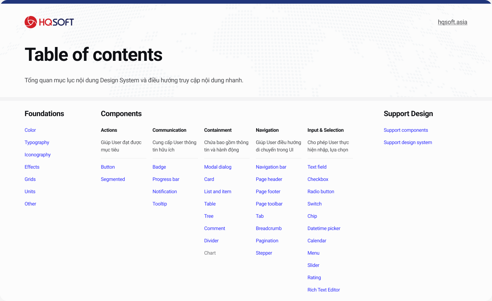
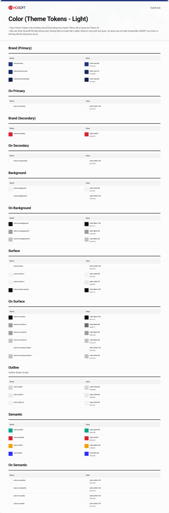
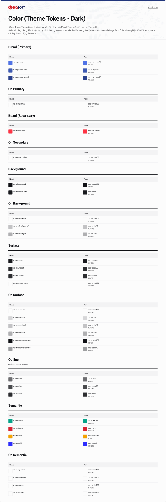
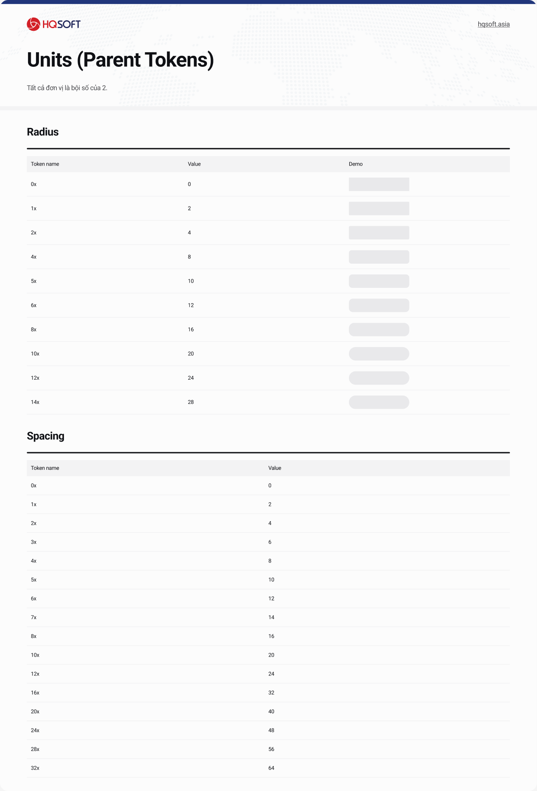
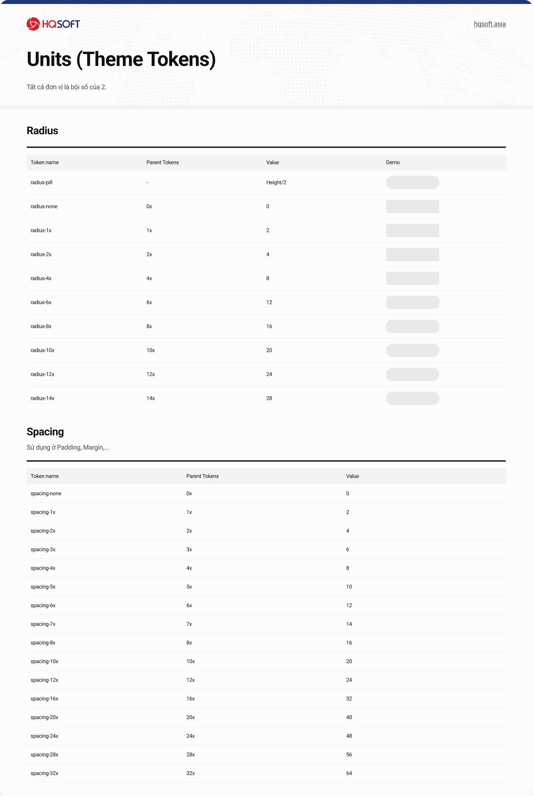
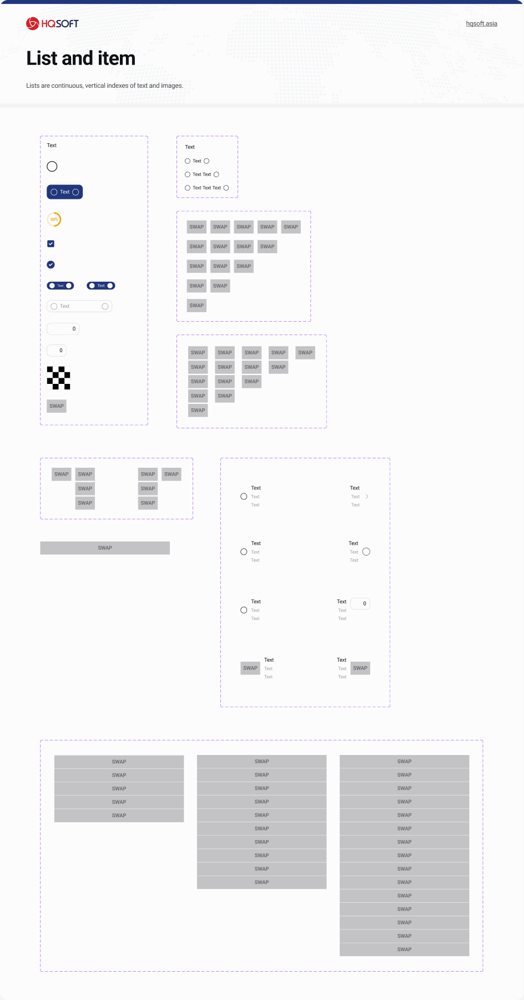

Foundation · Tokens · Component library · Documentation
Nền tảng
Web app (Desktop-first) · Light/Dark
Công cụ
Figma Variables · Styles · Component variants
Khi HQSOFT vận hành nhiều sản phẩm enterprise (SaaS/ERP/DMS), vấn đề không còn là “thiếu component” mà là thiếu một ngôn ngữ thiết kế thống nhất để thiết kế và kỹ thuật cùng ship nhanh mà vẫn nhất quán.
Mình xây HQSOFT Design System Xspire (Web) theo hướng product-ready: token 2 tầng (Parent → Theme), Light/Dark modes, chuẩn hoá typography/icon/elevation, và một thư viện component có khả năng scale cho workflow dày dữ liệu.
Tách Foundation rõ (Color/Type/Effects/Grids/Units) và triển khai token 2 tầng
Tini Design System
Cấu trúc component có tính “lắp ráp”, đặc biệt là item-first
Chuẩn hoá List and item theo hướng slots + element sets để mở rộng không cần detach
Bối cảnh enterprise
Dữ liệu dày, nhiều trạng thái, nhiều module
Ưu tiên rules + defaults + states, giảm “đẹp riêng lẻ”, tăng consistency và maintainability
02
Foundation
Mình tổ chức file theo thứ tự “foundation trước, component sau”. Đây là cách tránh rơi vào bẫy làm component bằng hex/spacing tuỳ hứng — vì khi đã có token, component chỉ còn là “binding + states”.
Information architecture trong Figma

Tách rõ Foundation (Color/Type/Icon/Effects/Units/Grids) và Components theo nhóm vai trò (Actions, Communication, Containment, Navigation, Input).
Typography & Icon styles
Mình chuẩn hoá text styles theo type scale rõ ràng (display/heading/title/body/label). Icon dùng Font Awesome Pro, nhưng ưu tiên SVG khi implement (performance + licensing).
Điểm quan trọng: naming của text/icon styles đi theo token naming, nên dev map sang code dễ.
Elevation & Effects
Elevation có 5 effect styles (bottom/top levels) để cover card, popover, modal, sticky bars. Mình không để “shadow tự bịa” trong component — shadow là token.
Nhờ vậy, hệ thống nhìn “cùng một độ sâu” trên mọi module, kể cả khi nhiều team cùng làm.
03
Token architecture
Mình dùng kiến trúc token 2 tầng:
Parent Tokensgiữ giá trị “gốc” (palette/scale) — dùng lại được, không phụ thuộc UI context.
Theme Tokenslà semantic tokens (role-based) — component dùng trực tiếp. Light/Dark chỉ là đổi mode.

Theme tokens (Light) — semantic mapping theo role: primary/surface/background/outline/semantic.

Theme tokens (Dark) — giữ nguyên role, đổi mode để đảm bảo contrast trên nền tối.
Units — spacing & radius

Parent tokens cho spacing/radius dùng base unit 2px (Nx = N×2px).

Theme tokens map trực tiếp để dev dùng nhất quán, tránh “spacing tuỳ hứng”.
Quy tắc mình đặt ra (để DS không bị “trôi”)
Rule
Lý do
Tác dụng
Không dùng hex trực tiếp
Hex làm component “đóng băng” theo một theme
Đổi theme/dark mode không phải sửa từng component
Semantic tokens là bề mặt API
Dev và design cần nói chuyện bằng ngữ nghĩa
“Primary/Surface/Outline” rõ ràng hơn “Navy-60”
States là token-driven
Hover/pressed/disabled không được “tự nghĩ” ở mỗi component
Hành vi tương tác nhất quán trên toàn hệ thống
04
Component strategy
Mục tiêu của mình không phải “đủ component cho đẹp”, mà là đủ khả năng lắp ráp để chịu được một bài toán rất HQSOFT: custom theo nhiều khách hàng cùng lúc.
Team thường phải làm song song cho nhiều client (ví dụ: ABI, Sabeco, AVN‑TT, PVM, FES, Lixil, …). Mỗi client lại có cách cấu trúc card, mật độ dữ liệu và quy ước hiển thị khác nhau. “Custom” trong thực tế không phải là vẽ lại từ đầu — mà là swap component này với component khác, và swap liên tục khi scope thay đổi.
List and item — “item-first” để sống sót qua multi-client customization
Đây là phần mình đào sâu nhất vì nó phản ánh đúng thực tế công ty. Khi cùng một lúc phải phục vụ nhiều client, thứ thay đổi nhiều nhất không phải “button tròn hay vuông” — mà là cấu trúc dữ liệu trong card/list: có/không có thumbnail, có/không có leading icon, có thêm trường phụ hay không, có trạng thái chọn (checkbox/radio) hay không, có progress hoặc input inline hay không…
Nếu mỗi biến thể lại tạo một component mới (hoặc detach instance để sửa), thư viện sẽ phình nhanh và vỡ tính nhất quán. Vì vậy mình chọn hướng tham chiếu Tini Design System: tách “item” ra khỏi “list” và biến item thành một “khung lắp ráp” có slots + element sets.

Một hệ item “lắp ráp”: prefix/content/suffix + subcontent + element sets. Khi custom, team chủ yếu swap element (checkbox/radio/progress/input/chip/icon/…) thay vì tạo item mới.
Bài toán thật: swap liên tục
Ở HQSOFT, cùng một module (list khách hàng, list đơn, list tồn kho, list nhiệm vụ…) có thể được “đặt lại format” giữa các client. Có client muốn đọc nhanh theo 2 dòng + badge, có client cần 3–4 trường dữ liệu ngay trong item, có client yêu cầu chọn hàng loạt (checkbox), có nơi lại dùng radio hoặc input inline.
Vì vậy component cần cho phép thay đổi cấu trúc mà không phá layout và không khiến thư viện nở vô kiểm soát.
Giải pháp: item như “API”
Mình coi item như một “API” ổn định: slots (Prefix / Content / Suffix / Subcontent) + element sets (checkbox/radio/icon/progress/text-field/chip/image…). Khi cần custom, team chỉ cần đổi “tham số” (variant/boolean) hoặc swap element — thay vì tạo component mới.
Kết quả là designer vẫn dùng instance (không detach), dev cũng map được sang mô hình “props + slots” rất tự nhiên.
Mình thiết kế “khung lắp” như thế nào?
Chốt anatomy ổn định
Định nghĩa Prefix / Content / Suffix + Subcontent (left/right). Đây là phần “không đổi” dù client thay layout.
Tách element thành component set
Checkbox, radio, progress, text-field, chip, icon… là các element có thể cắm vào slots. Custom chủ yếu là swap các element này.
Thiết kế theo “số lượng”
Row/Column theo quantity (1→5) để scale layout dữ liệu mà không tạo hàng chục frame lẻ.
Giữ naming để dev map được
Variant đặt theo intent: type/size/quantity/has-prefix/has-suffix… giúp dev đọc và chuyển hoá thành props nhanh.
Những “điểm khó” mình phải xử lý
Tình huống custom
Nếu làm “component mới”
Hướng mình chọn (swap)
Chọn hàng loạt
Sinh ra 1 list item riêng cho checkbox
Swap List item/Element sang type=checkbox, giữ nguyên item shell
Inline input
Dễ phải detach để nhét input vào
Swap element type=text-field + chọn size md/sm theo density
Hiển thị trạng thái
Mỗi client 1 badge placement khác nhau
Đặt badge vào slot suffix/trailing + bật/tắt bằng boolean
Dữ liệu nhiều cột
Tạo nhiều layout item khác nhau (khó maintain)
Dùng Row/Column quantity=1→5 để “scale” cấu trúc dữ liệu
Nguyên tắc component
Anatomy & slots rõPrefix/Content/Suffix là “hợp đồng” để scale mà không phá layout.
States phải đủEnabled/hover/pressed/disabled được define theo tokens, tránh “tự nghĩ”.
Variant naming nhất quánType/Size/State/Shape… để dev map sang props trực quan.
Điểm trade-off mình chấp nhận
Nhiều variants hơnĐổi lại: ít detach, ít override, dễ maintain.
Đầu tư foundation sớmĐổi lại: scale nhanh cho 3+ sản phẩm mà không “vỡ” style.
Documentation bắt buộcĐổi lại: onboard nhanh và giảm hỏi-đáp giữa design/dev.
05
Governance & vận hành
Để DS sống được lâu, mình coi nó như sản phẩm: có cấu trúc page rõ, có release notes, có quy trình thêm component và quy tắc “không được phá token”.
Cấu trúc Figma theo vòng đời
FOUNDATIONS và COMPONENTS là vùng stable. Mình tách SUPPORT cho asset/phần phụ trợ, và DRAFT cho thử nghiệm — để library chính không bị “rác hoá”.
Documentation song song
Ngoài Figma, mình duy trì guideline Web: token naming, mapping light/dark, typography/icon sizes, elevation tokens và index component. Mục tiêu là dev có thể implement mà không phải đoán.
Cách mình thêm một component mới
Benchmark
So sánh Material/Tini/Ant… để chọn pattern phù hợp enterprise.
Define anatomy + props
Chốt slots/variants/states trước khi vẽ đẹp.
Bind tokens
Màu/spacing/radius/elevation đều đi qua tokens (Parent → Theme).